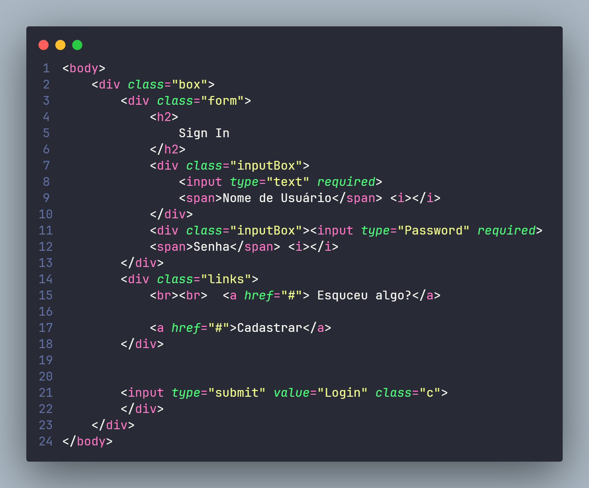
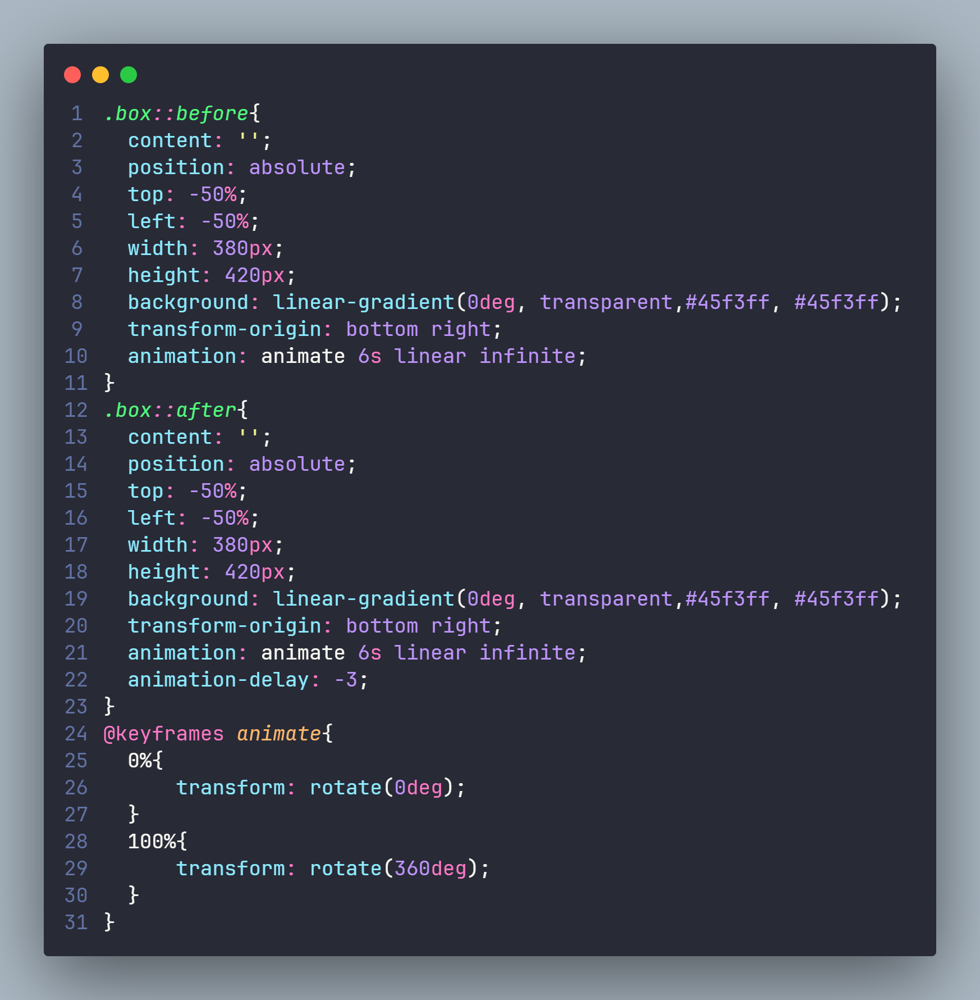
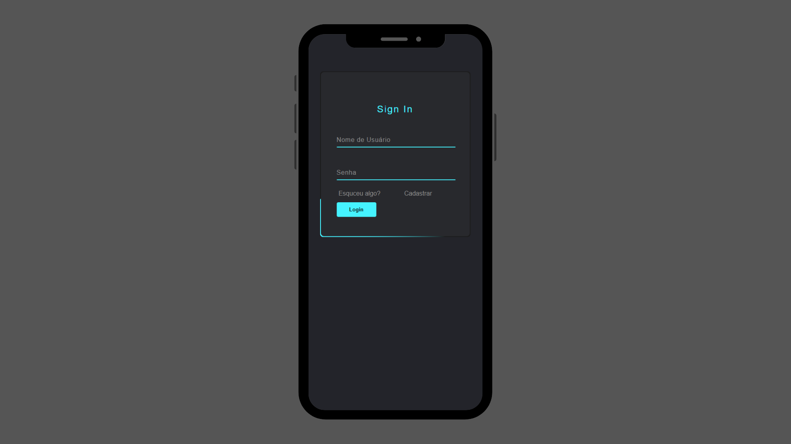

Login Page
Descrição do Projeto
Este projeto consiste na criação de uma webpage de login. Tem como principal função fornecer ao usuário uma interface muito bem otimizada e simples para a realização do seu login. E lógico, sem deixar a estética de lado.
Para a produção desse projeto, foi necessário o uso de diversas tecnologias. Entre elas, a linguagem de formatação HTML5, onde seu principal papel era montar a estrutura da página e tudo que seria utilizado nela em relação a textos, imagens e outros arquivos de hipertexto para o compartilhamento, como no exemplo acima.
A segunda linguagem utilizada nesse projeto foi a linguagem CSS que tem como função estilizar todas as formatações estabelecidas pelo HTML. O CSS é um mecanismo para adicionar estilos a uma página web, aplicado diretamente nas tags HTML ou ficar contido dentro das tags. Também é possível adicionar estilos adicionando um link para um arquivo CSS que já contenha outros estilos.
Como visto acima, com a combinação de CSS e HTML bem desenvolvidos, temos um protótipo exceletne e responsivo para o usuário utilizar. Para acessar esse protótipo, acesse o link aqui e entre no repositório "Animated Login Page".